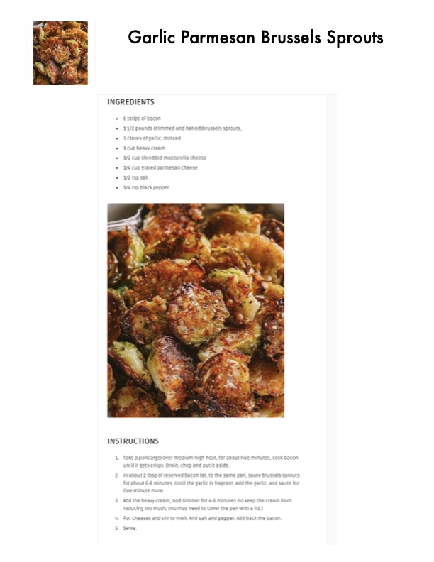

Garlic Parmesan Brussels Sprouts

Original cookbook page 281
Crispy brussels sprouts sautéed with bacon and finished in a creamy garlic parmesan sauce. A rich and indulgent side dish.
Prep: 10 minutes • Cook: 15 minutes • Total: 25 minutes
Ingredients
- 6 strips of bacon
- 1 1/2 pounds brussels sprouts, trimmed and halved
- 3 cloves of garlic, minced
- 1 cup heavy cream
- 1/2 cup shredded mozzarella cheese
- 1/4 cup grated parmesan cheese
- 1/2 tsp salt
- 1/4 tsp black pepper
Instructions
- Take a large pan over medium-high heat, cook bacon for about five minutes until it gets crispy. Drain, chop and set aside. Reserve about 2 tablespoons of bacon fat in the pan.
- In the reserved bacon fat, sauté brussels sprouts for about 6-8 minutes. Add the garlic, and sauté for one minute more until the garlic is fragrant.
- Add the heavy cream, and simmer for 4-6 minutes. You may need to cover the pan with a lid to keep the cream from reducing too much.
- Add both cheeses and stir to melt. Season with salt and pepper. Add back the bacon.
- Serve immediately.
📝 Recipe Notes
Rich and creamy brussels sprouts side dish. The bacon fat adds extra flavor to the sprouts. Can be covered while simmering to prevent cream from reducing too quickly.
Recipe #281 from collection